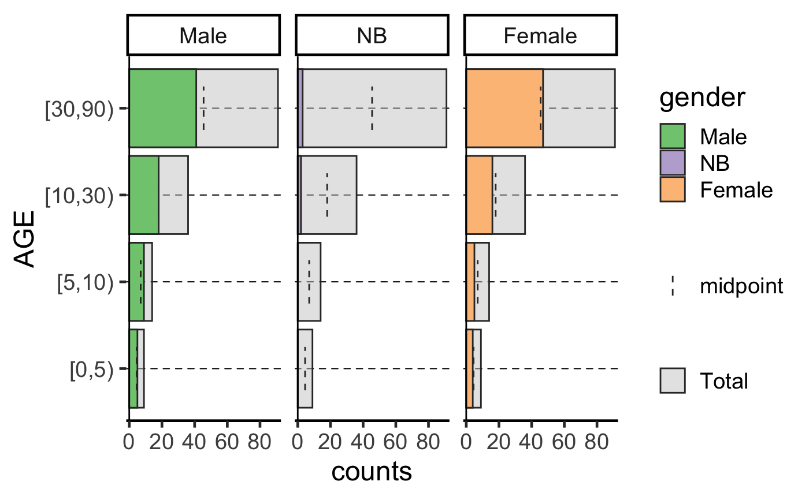
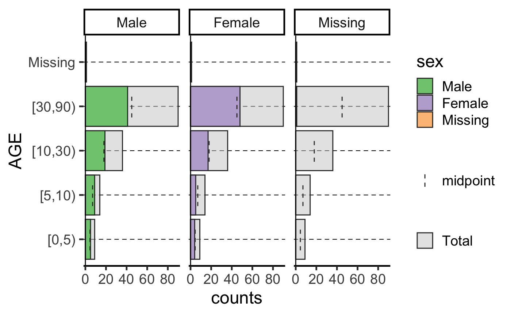
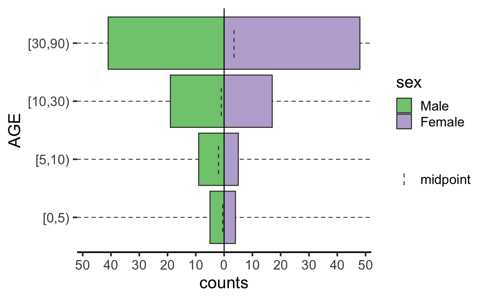
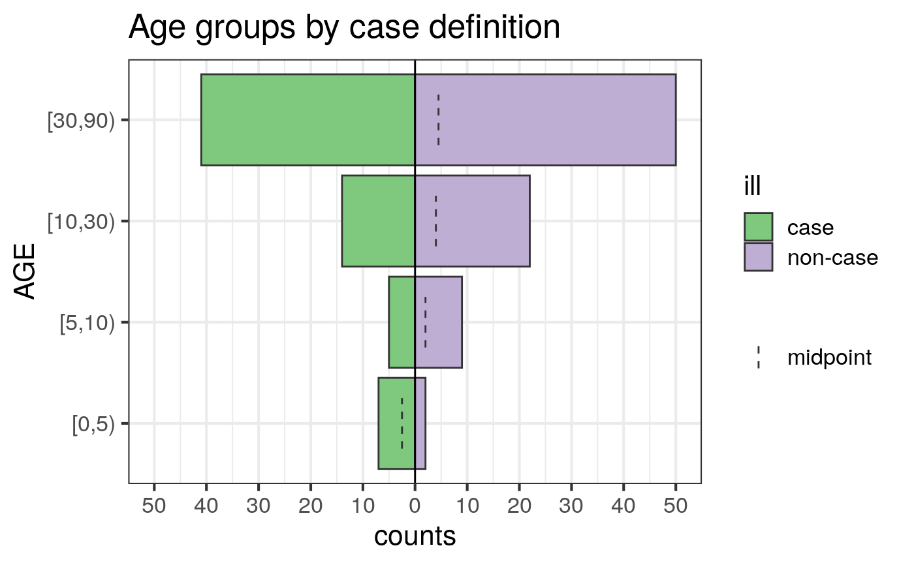
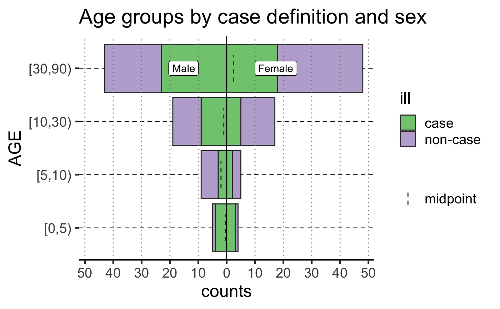
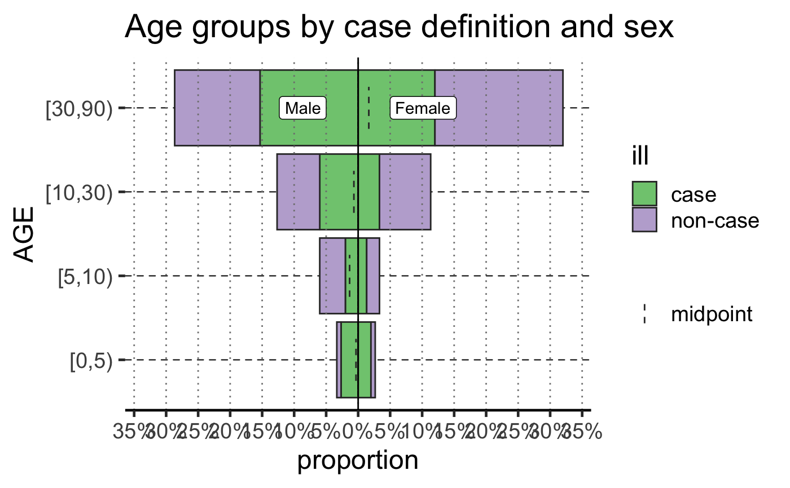
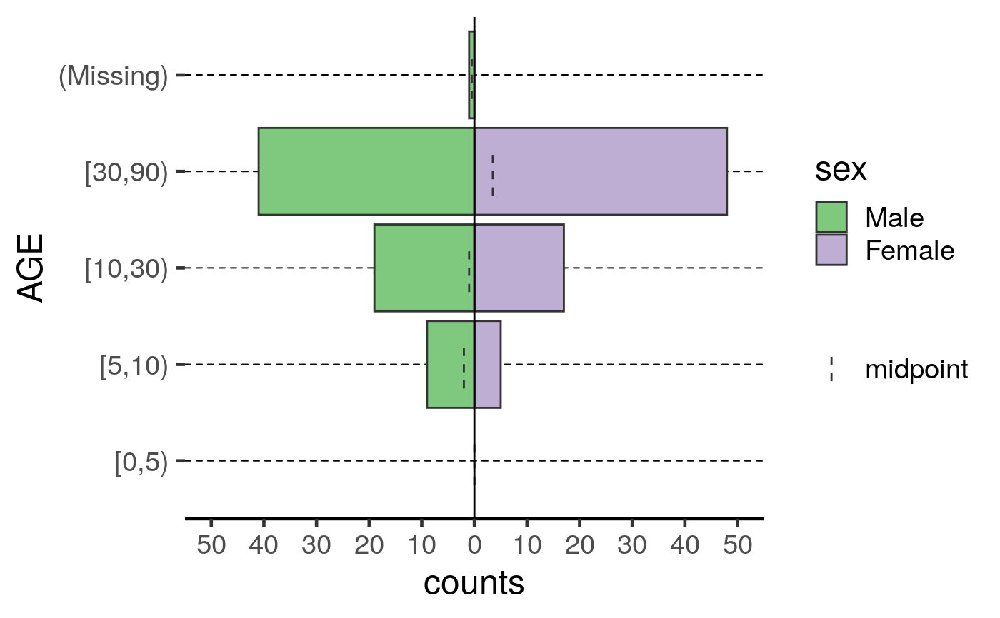

Plot a population pyramid (age-sex) from a dataframe.
plot_age_pyramid.RdPlot a population pyramid (age-sex) from a dataframe.
plot_age_pyramid(data, age_group = "age_group", split_by = "sex", stack_by = split_by, proportional = FALSE, na.rm = FALSE, show_halfway = TRUE, vertical_lines = FALSE, horizontal_lines = TRUE, pyramid = TRUE, pal = NULL)
Arguments
| data | Your dataframe (e.g. linelist) |
|---|---|
| age_group | the name of a column in the data frame that defines the age group categories. Defaults to "age_group" |
| split_by | the name of a column in the data frame that defines the the bivariate column. Defaults to "sex". See NOTE |
| stack_by | the name of the column in the data frame to use for shading the bars |
| proportional | If |
| na.rm | If |
| show_halfway | When |
| vertical_lines | If you would like to add dashed vertical lines to help
visual interpretation of numbers. Default is to not show ( |
| horizontal_lines | If |
| pyramid | if |
| pal | a color palette function or vector of colors to be passed to
|
Note
If the split_by variable is bivariate (e.g. an indicator for
pregnancy), then the result will show up as a pyramid, otherwise, it will be
presented as a facetted barplot with with empty bars in the background
indicating the range of the un-facetted data set. Values of spit_by will
show up as labels at top of each facet.
Examples
library(ggplot2) old <- theme_set(theme_classic(base_size = 18)) set.seed(2018-01-15) ages <- cut(sample(80, 150, replace = TRUE), breaks = c(0, 5, 10, 30, 90), right = FALSE) sex <- sample(c("Female", "Male"), 150, replace = TRUE) gender <- sex gender[sample(5)] <- "NB" ill <- sample(c("case", "non-case"), 150, replace = TRUE) dat <- data.frame(AGE = ages, sex = factor(sex, c("Male", "Female")), gender = factor(gender, c("Male", "NB", "Female")), ill = ill, stringsAsFactors = FALSE) # Create the age pyramid, stratifying by sex print(ap <- plot_age_pyramid(dat, age_group = AGE))# Create the age pyramid, stratifying by gender, which can include non-binary print(apg <- plot_age_pyramid(dat, age_group = AGE, split_by = gender))# Remove NA categories with na.rm = TRUE dat2 <- dat dat2[1, 1] <- NA dat2[2, 2] <- NA dat2[3, 3] <- NA print(ap <- plot_age_pyramid(dat2, age_group = AGE))#> Warning: removing 1 observations with missing values between the sex and sex columns.#> Warning: removing 1 observations with missing values between the sex and sex columns.#> Warning: removing 1 observations with missing values from the AGE column.# Stratify by case definition and customize with ggplot2 ap <- plot_age_pyramid(dat, age_group = AGE, split_by = ill) + theme_bw(base_size = 16) + labs(title = "Age groups by case definition") print(ap)# Stratify by multiple factors ap <- plot_age_pyramid(dat, age_group = AGE, split_by = sex, stack_by = ill, vertical_lines = TRUE) + labs(title = "Age groups by case definition and sex") print(ap)# Display proportions ap <- plot_age_pyramid(dat, age_group = AGE, split_by = sex, stack_by = ill, proportional = TRUE, vertical_lines = TRUE) + labs(title = "Age groups by case definition and sex") print(ap)# empty group levels will still be displayed dat3 <- dat2 dat3[dat$AGE == "[0,5)", "sex"] <- NA plot_age_pyramid(dat3, age_group = AGE)#> Warning: removing 10 observations with missing values between the sex and sex columns.theme_set(old)